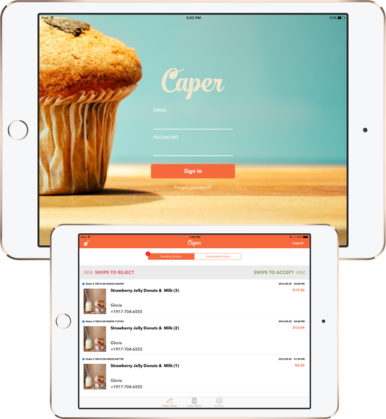
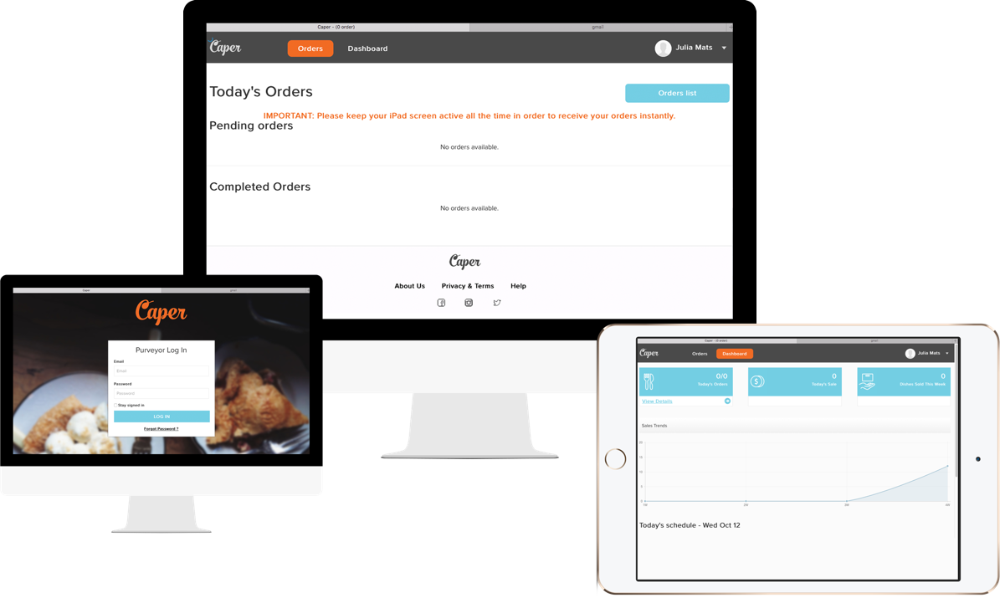
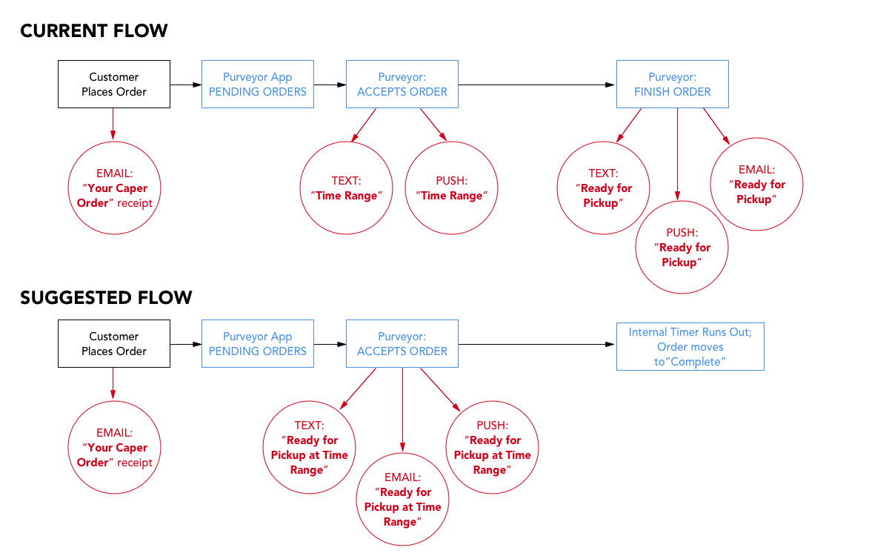
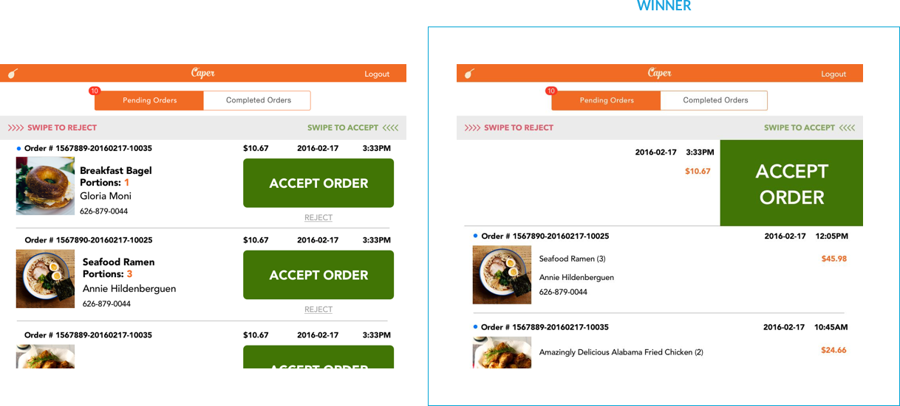
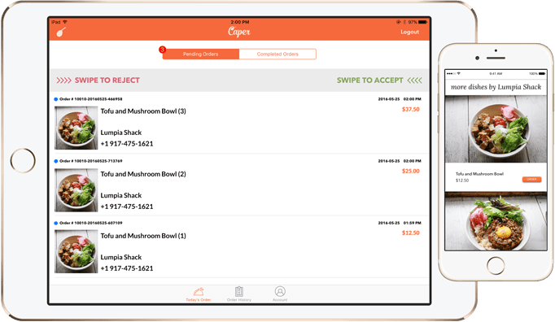
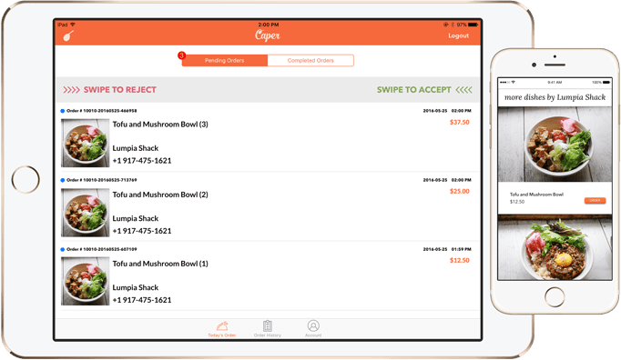

OVERVIEW
_

COMPANY & MISSION
Caper | Reimagining dish discovery and empowering local purveyors.
MY ROLE
- Market Research
- Information Architecture
- UX Design
- UI Design
PLATFORMS
- Tablet - native iOS
TECHNOLOGIES
- Sketch
- InVision
- Illustrator
- Photoshop
DELIVERED
Caper for Purveyors built for our closed-beta is currently available on the App Store.
Caper selects passionate, talented purveyors and enables discovery of their signature dishes based on customer mood, taste profile, and location. We needed to build a powerful tool to help our purveyors with order management, dish tracking, and data analytics.
CHALLENGE
_
The Caper experience is two-pronged - dish discovery for our customers, empowerment and growth for our purveyors. After we built an app for our customers, we needed a way for our purveyors to easily receive and fulfill orders. The restaurateur life is a busy one, so our solution needed to be simple and non-intrusive.
APPROACH
_
Browser-Based Dashboard
Our CEO is a successful restaurateur with years of experience in the food and dining industry, so we started out building this purveyor-facing app based solely on his experiences and insight. With time constraints in mind, the initial solution our CTO proposed was to build a browser-based dashboard that can be used to receive and fulfill orders.
In retrospect, we should have first developed a simple prototype and tested it on actual purveyors in New York City, developing a thorough understanding of their workflow and operations first before forging ahead without true insight and user data.

We tested our browser-model with our earliest purveyors/beta-testers and quickly discovered the the limitations of the model. I put together an updated app flow and the team came up with the following solutions:
- Issue #1: Lacking reliable order notifications due to limitations of Safari/other browsers on iPad and desktop
- Issue #2: Orders coming in are not being updated and refreshed in real-time
- Issue #3: Feedback loop and order status to customers is broken, resulting in customer confusion about whether their orders have been accepted and when it is ready for pick-up
- Issue #4: Some purveyors don’t want additional hardware (iPad) cluttering up their space
Solution → A native iOS app can give push notifications and emit a loud noise, a request that we received across the board from all purveyors. Additionally, we can route automated phone calls to the restaurant and email notifications as well.
Solution → A native iOS app receives and refreshes data automatically.
Solution → An updated app flow can provide a cleaner, better solution for both purveyors and customers.
Solution → A native iOS app can be downloaded onto their existing iPads or iPhones.

App-Based Dashboard
Based on the above research, we concluded that the most efficient and sensible way forward was to build a native iOS app for our purveyors. For the app, I put together wireframes and an InVision prototype to test with our purveyors. Our target user base is restaurant owners who are busy, generally not tech-savvy, and always on a time-crunch. They needed something that was easy to use, extremely simple to navigate, and attention-grabbing in a loud, noisy atmosphere.
We put together a design that was clean, clutter-free, and had all the necessary information for each order. Next, we needed to A/B Test order fulfillment button:
#1 - A/B Test: Button vs. Swipe
The giant button design was to make it quick and obvious for busy restaurant staff to accept an order, but the swipe function is a standard iOS gesture that also makes it easier to be used across all devices. We did a quick test with restaurant owners and found that while older restaurateurs understood the button design intuitively, they also picked up quickly on the swiping after minimal instruction. To minimize confusion, we included instructions in the app itself (“Swipe to accept / Swipe to reject”)

INTRODUCING
_
CAPER FOR PURVEYORS
The gallery below shows the first version of the iOS app for Caper purveyors.
 
